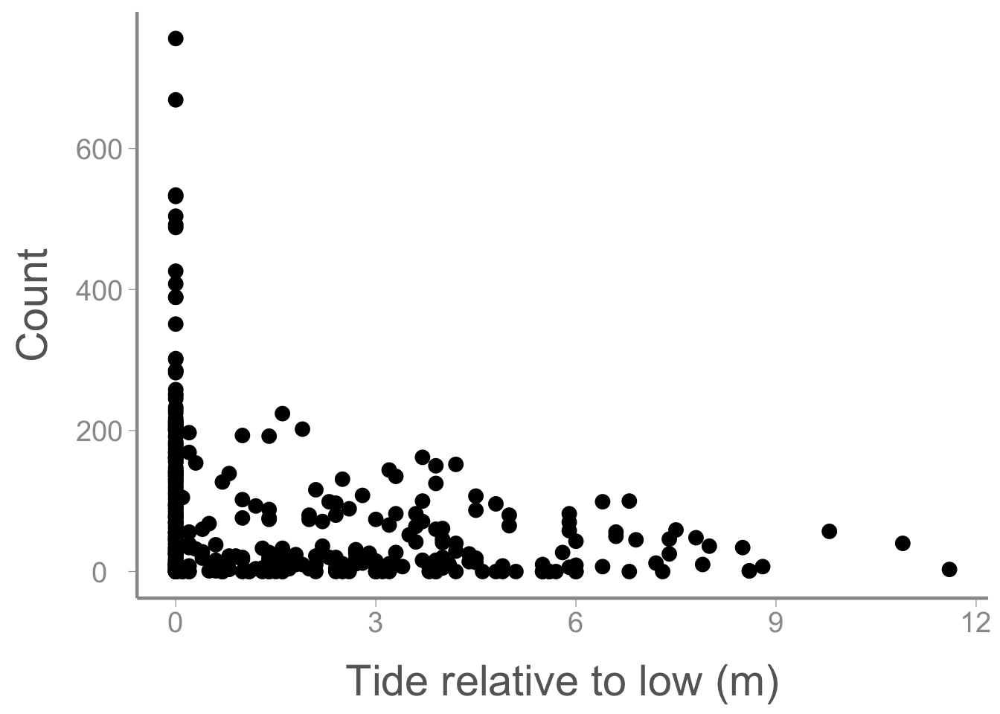
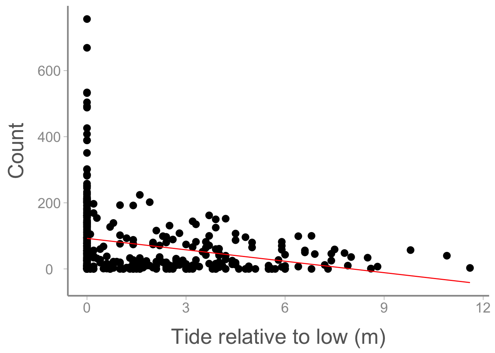
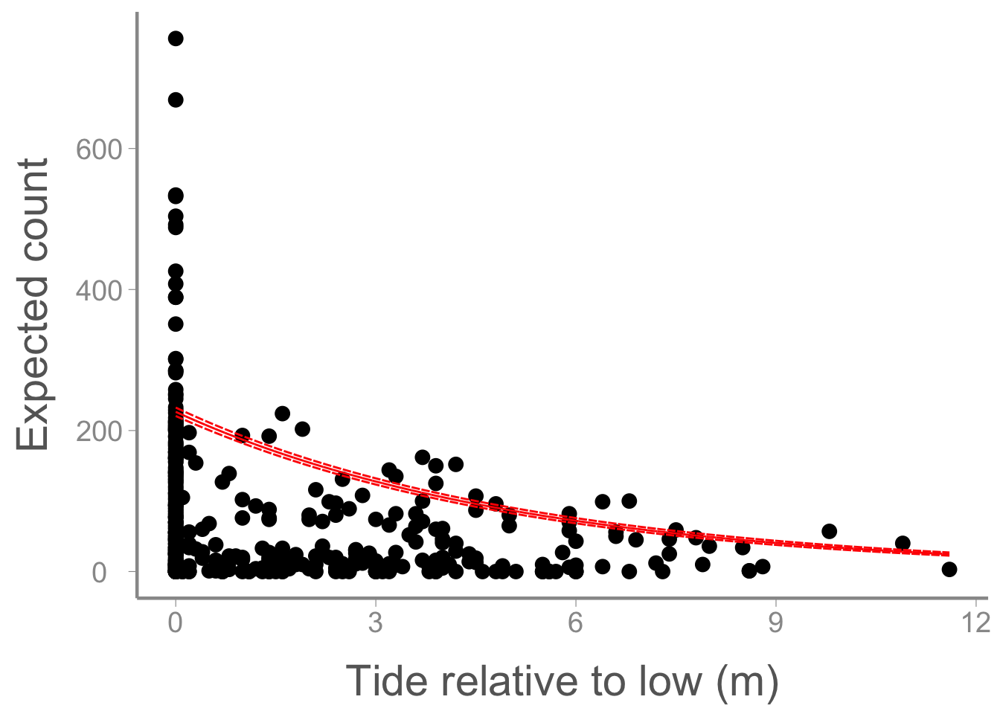
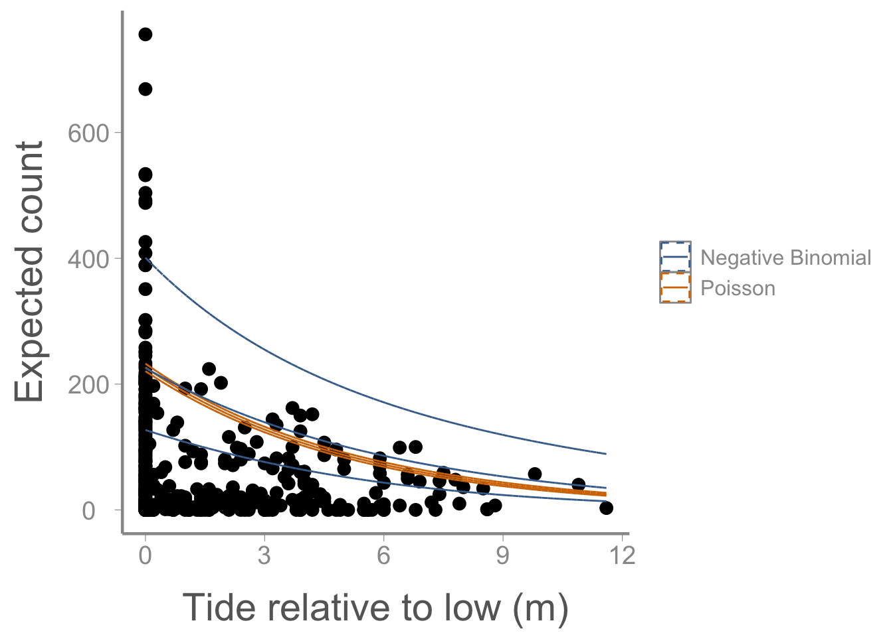

library(FANR6750)
data("harbordata")
head(harbordata)
#> Survey Number substrate Reltolow SITE
#> 1 1 250 rock 0.0 Abbess I.
#> 2 2 144 rock 3.2 Abbess I.
#> 3 3 0 rock 4.9 Alava Bay
#> 4 4 42 rock 3.6 Alava Bay
#> 5 5 10 rock 0.0 Alava Bay
#> 6 6 0 rock 1.6 Alava BayLab 13: Generalized linear models: Poisson Regression
FANR 6750: Experimental Methods in Forestry and Natural Resources Research
Fall 2026
Lab 12
Logistic Regression
Link functions
Using glm()
Creating plots
Today’s topics
Poisson Regression
Link functions
Creating plots
Poisson vs Negative binomial
Poisson regression
This week we will see another situation where using a linear model will not be the most appropriate approach. Here, we are interested in using count data as our response variable and estimating counts as a function of some predictors.
Let’s take a look at a data example to demonstrate this concept. The data are modified from Ver Hoef and Boveng 2007 and include 400 observed counts of harbor seals from aerial surveys conducted in coastal Alaska.
First let’s visualize the data.
library(ggplot2)
ggplot() +
geom_point(data = harbordata, aes(x = Reltolow, y = Number)) +
scale_y_continuous("Count") +
scale_x_continuous("Tide relative to low (m)")
Here we are interested in estimating the count of harbor seals during aerial surveys. Like last week, we could start by constructing a model that estimates count as a function of tide height.
mod1 <- lm(Number~ Reltolow, data= harbordata)
summary(mod1)
#>
#> Call:
#> lm(formula = Number ~ Reltolow, data = harbordata)
#>
#> Residuals:
#> Min 1Q Median 3Q Max
#> -92.4 -63.3 -29.0 38.7 663.6
#>
#> Coefficients:
#> Estimate Std. Error t value Pr(>|t|)
#> (Intercept) 92.39 6.05 15.26 < 2e-16 ***
#> Reltolow -11.52 2.17 -5.31 1.9e-07 ***
#> ---
#> Signif. codes: 0 '***' 0.001 '**' 0.01 '*' 0.05 '.' 0.1 ' ' 1
#>
#> Residual standard error: 99.4 on 398 degrees of freedom
#> Multiple R-squared: 0.0661, Adjusted R-squared: 0.0637
#> F-statistic: 28.2 on 1 and 398 DF, p-value: 1.86e-07Now let’s add our model predictions to the plot from above.
model_pred <- predict(mod1)
ggplot() +
geom_point(data = harbordata, aes(x = Reltolow, y = Number)) +
geom_line(aes(harbordata$Reltolow, model_pred), color= 'red') +
scale_y_continuous("Count") +
scale_x_continuous("Tide relative to low (m)")
What issues do you see with this plot? Does this look like a reasonable way to model this response variable?
Similar to last week, we are again presented with a problem. We have an integer count response variable but using a linear model results in unreasonable predictions (since it is not possible for the response to take on values in between the integers or below zero). We can resolve this in a similar way as last week. In that lab, Our data was (0,1) and we needed to create a response variable that could take on values only between zero and one (inclusive) so probability was a reasonable choice. In this case, our response is all possible positive integers but we need a response that can take on all possible positive values. In this case, we can model the mean response (\(\lambda\)) rather than the count observations themselves. We could derive an equation that estimates \(\lambda\) as a function of our predictor variables:
\[ \lambda = e^{\beta_0 + \beta_1x1 + ... + \beta_zx_z} \]
Now we’ve run into another problem. What is the issue with this equation in the context of linear modeling?
Instead, we can use a link function (in this case the log link) to create a linear relationship between the response and the predictors.
Remember from lecture that the model for the Poisson regression is:
\[\Large log(\lambda_i) = \beta_0 + \beta_1x_{i1} + \beta_2x_{i2} + · · · + \beta_px_{ip}\] \[\Large y_i \sim Poisson(\lambda_i)\]
where \(\lambda_i\) is the expected value of \(y_i\)
Using the harbor data, let’s model the number of harbor seals detected at each site as a function of site substrate and tide height relative to low tide:
fm2 <- glm(Number ~ substrate + Reltolow, family = poisson(link = "log"), data = harbordata)
summary(fm2)
#>
#> Call:
#> glm(formula = Number ~ substrate + Reltolow, family = poisson(link = "log"),
#> data = harbordata)
#>
#> Coefficients:
#> Estimate Std. Error z value Pr(>|z|)
#> (Intercept) 5.42280 0.01343 403.7 <2e-16 ***
#> substraterock -1.00615 0.01529 -65.8 <2e-16 ***
#> substratesand -1.28421 0.03586 -35.8 <2e-16 ***
#> Reltolow -0.19100 0.00386 -49.5 <2e-16 ***
#> ---
#> Signif. codes: 0 '***' 0.001 '**' 0.01 '*' 0.05 '.' 0.1 ' ' 1
#>
#> (Dispersion parameter for poisson family taken to be 1)
#>
#> Null deviance: 42725 on 399 degrees of freedom
#> Residual deviance: 34227 on 396 degrees of freedom
#> AIC: 36116
#>
#> Number of Fisher Scoring iterations: 6Notice that we use the family = argument to tell R that this is a poisson glm with a log link function.
What do the parameter estimates from this model represent, including the intercept? What can we say about the effects of substrate and tide height on harbor seal counts?
As we have seen previously, we can use predict() to estimate counts at different combinations of tide height and substrate. For example, how does the predicted count change across tide heights on ice:
predData <- data.frame(Reltolow = seq(min(harbordata$Reltolow), max(harbordata$Reltolow), length = 10000), substrate= 'ice')To get confidence intervals on the \((0, \infty)\) scale, predict on the log (link) scale and then back transform using the inverse-link (exp()):
pred.link <- predict(fm2, newdata = predData, se.fit = TRUE)
predData$lambda <- exp(pred.link$fit) # exp is the inverse-link function
predData$lower <- exp(pred.link$fit - 1.96 * pred.link$se.fit)
predData$upper <- exp(pred.link$fit + 1.96 * pred.link$se.fit)
ggplot() +
geom_point(data = harbordata, aes(x = Reltolow, y = Number)) +
geom_path(data = predData, aes(x = Reltolow, y = lambda), color= 'red') +
geom_ribbon(data = predData, aes(x = Reltolow, ymin = lower, ymax = upper),
fill = NA, color = "red", linetype= 'dashed') +
scale_x_continuous("Tide relative to low (m)") +
scale_y_continuous("Expected count")
Although we have completed the analysis, this still may not be the most appropriate way to consider this dataset. What are some issues that you see either from the plot or from the model output related to concepts discussed in lecture?
Why does the fitted line not appear to pass through the data very well?
Negative Binomial Regression
In this dataset, assuming that the mean is equal to the variance may not be a good idea. Especially considering that the mean count is 74.07 and the variance is 1.0558^{4}.
Instead, we could consider using a few other methods. In lecture, we discussed the use of quasi-likelihood estimation (Quasi-Poisson). Here, we will talk briefly about the Negative Binomial (NB) distribution.1
In some sense, the Poisson distribution can be thought of as a specific case of the NB distribution where the mean is equal to the variance. By relaxing this assumption though, we end up with two parameters instead of one (the mean and the ‘dispersion’). This allows for the scenarios where the variance is much larger than the mean (overdispersion).
What are some biological scenarios where we might see this?
Below, we will fit a NB model to the dataset and perform the plotting steps as above to see how our results differ.
library(MASS)
nb1 <- glm.nb(Number ~ substrate + Reltolow, data = harbordata)
summary(nb1)
#>
#> Call:
#> glm.nb(formula = Number ~ substrate + Reltolow, data = harbordata,
#> init.theta = 0.4661173743, link = log)
#>
#> Coefficients:
#> Estimate Std. Error z value Pr(>|z|)
#> (Intercept) 5.4190 0.2933 18.48 < 2e-16 ***
#> substraterock -1.0372 0.3077 -3.37 0.00075 ***
#> substratesand -1.3827 0.4500 -3.07 0.00212 **
#> Reltolow -0.1608 0.0327 -4.92 8.8e-07 ***
#> ---
#> Signif. codes: 0 '***' 0.001 '**' 0.01 '*' 0.05 '.' 0.1 ' ' 1
#>
#> (Dispersion parameter for Negative Binomial(0.4661) family taken to be 1)
#>
#> Null deviance: 532.29 on 399 degrees of freedom
#> Residual deviance: 484.04 on 396 degrees of freedom
#> AIC: 4009
#>
#> Number of Fisher Scoring iterations: 1
#>
#>
#> Theta: 0.4661
#> Std. Err.: 0.0319
#>
#> 2 x log-likelihood: -3999.4500
predDatanb <- data.frame(Reltolow = seq(min(harbordata$Reltolow), max(harbordata$Reltolow), length = 10000), substrate= 'ice')
pred.linknb <- predict(nb1, newdata = predDatanb, se.fit = TRUE)
predDatanb$lambda <- exp(pred.linknb$fit) # exp is the inverse-link function
predDatanb$lower <- exp(pred.linknb$fit - 1.96 * pred.linknb$se.fit)
predDatanb$upper <- exp(pred.linknb$fit + 1.96 * pred.linknb$se.fit)
ggplot() +
geom_point(data = harbordata, aes(x = Reltolow, y = Number)) +
geom_path(data = predData, aes(x = Reltolow, y = lambda, color= 'Poisson')) +
geom_ribbon(data = predData, aes(x = Reltolow, ymin = lower, ymax = upper, color= 'Poisson'),
fill = NA, linetype= 'dashed') +
geom_path(data = predDatanb, aes(x = Reltolow, y = lambda, color= 'Negative Binomial')) +
geom_ribbon(data = predDatanb, aes(x = Reltolow, ymin = lower, ymax = upper, color= 'Negative Binomial'),
fill = NA, linetype= 'dashed') +
scale_x_continuous("Tide relative to low (m)") +
scale_y_continuous("Expected count")
In what ways do the model predictions from the NB regression differ from the Poisson regression? Compare the information provided by the model output from each model.
Assignment
Researchers are interested in understanding factors which affect alligator clutch size (number of eggs). 350 nests were surveyed across 3 habitat types. During the surveys, the clutch size was recorded as well as the length of the female alligator.
The data can be loaded using:
library(FANR6750)
data("alligatordata")Create an R markdown report to do the following:
Use both regression methods discussed in lab (Poisson and NB) to estimate clutch size as a function of the available predictors (2 pt)
Include a well-formatted summary table of the parameter estimates from both models (1 pt)
Choose one of the models and provide a clear interpretation of the parameter estimates (1 pt).
Use the poisson regression model to plot the relationship between number of eggs and female length, for all three habitat types, on the same graph. The graph should include (1 pt):
the observed data points (color coded by habitat)
a legend
approximate 95% confidence intervals
Create a plot of the relationship between number of eggs and female length (at one of the three habitat types) using both regression methods on the same graph. The graph should include (1 pt):
the observed data points
a legend
approximate 95% confidence intervals
Interpret the plot from Question 5. Which regression method do you think is most appropriate for this dataset? Justify your decision (2 pt)
At the end of your report, under a header titled “Reflection”, answer the following questions:
On a 1-10 scale, how would you rate your confidence in the topics covered in this lab?
What lingering questions/confusion about these topics do you still have?
You may format the report however you like but it should be well-organized, with relevant headers, plain text, and the elements described above.
A few things to remember when creating the document:
Be sure to include your name in the
authorfield of the headerBe sure the output type is set to:
output: html_documentBe sure to set
echo = TRUEin allRchunks so that all code and output is visible in the knitted documentRegularly knit the document as you work to check for errors
See the R Markdown reference sheet for help with creating
Rchunks, equations, tables, etc.If you use AI on any part of your assignment, you must include the full prompt(s) you used and it’s full answer(s) in a separate section titled “AI assistance” at the end of this document.
Footnotes
While quasi-poisson will produce identical coefficients to using poisson regression, it will result in larger standard errors. In contrast, quasi-poisson will actually produce different coefficients than negative binomial regression. This is because the variance term in quasi-poisson is considered to be a linear function of the mean while the variance term in negative binomial regression is a quadratic (or even cubic) function of the mean. As a result, quasi-poisson and negative binomial regression are more or less appropriate than the other depending on the data scenario.↩︎